作品介绍
从痛点入手：状态真空期。
【场景】工位 / 上下班切换——早起进不去工作、午后脑雾、下班切不进休息。
【用户】白领，以及需要短暂逃离脑雾的人（含 ADHD 真实用户语境，不夸大疗效）。
【痛点】大脑状态真空期——知道该休息或专注，却进不去状态。
一段及时的冥想调适，可辅助短暂逃离脑雾（Soft Healthcare · 非医疗）。
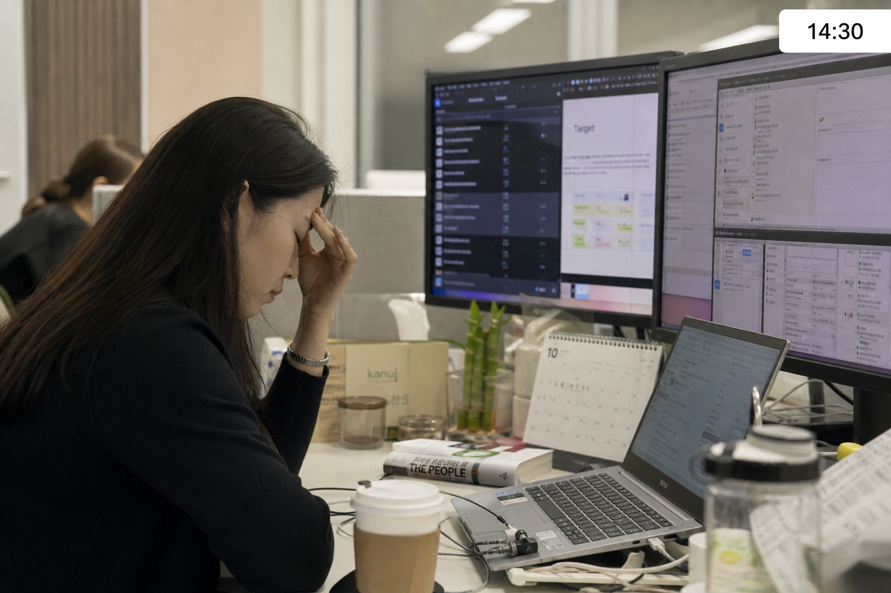
Pitch 痛点三帧：启不来 → 扛过头 → 切不掉。人离开了工位，状态还没有。
面试时可展开：浏览 Attunia 静态体验页
静态网页无法运行实机的 TUNO Agent。下面嵌的是 GitHub Pages 上的 purpose 路径，方便面试官当场点开走一眼。
产品故事 · PITCH
VITAL · SOFT HEALTHCARE
Attunia
帮助用户克服（工作脑雾 & WLB 切换）大脑状态真空期的心理调适 Agent
Tuno Agent 以脑电波等健康设备为入口，Agent 为决策机制，并基于记忆与真实情境，为用户提供真正适配身心的调律和大脑康复服务。
调节与福祉支持 · 不诊疗 · 原始脑电不进外部 LLM
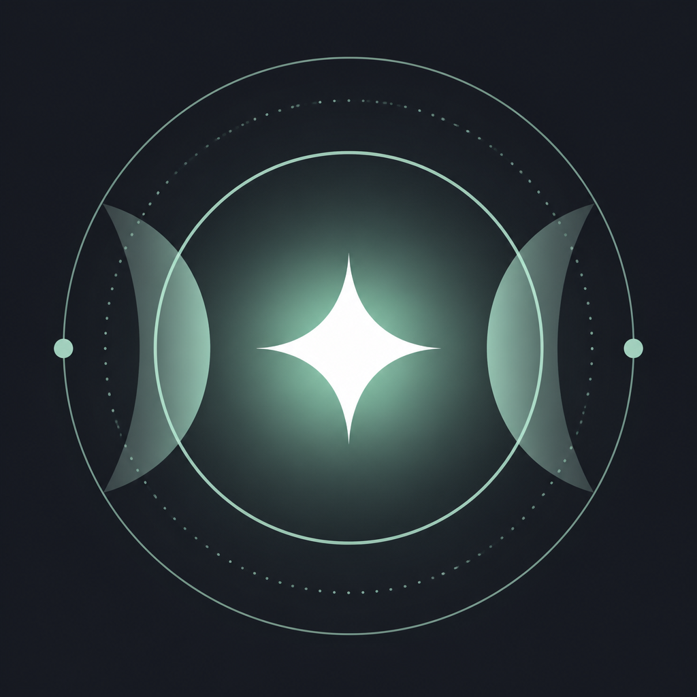
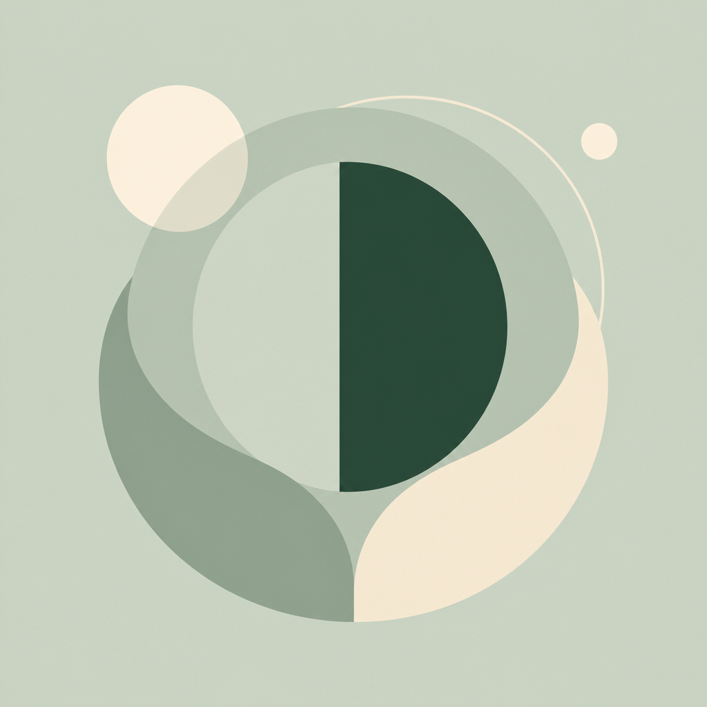
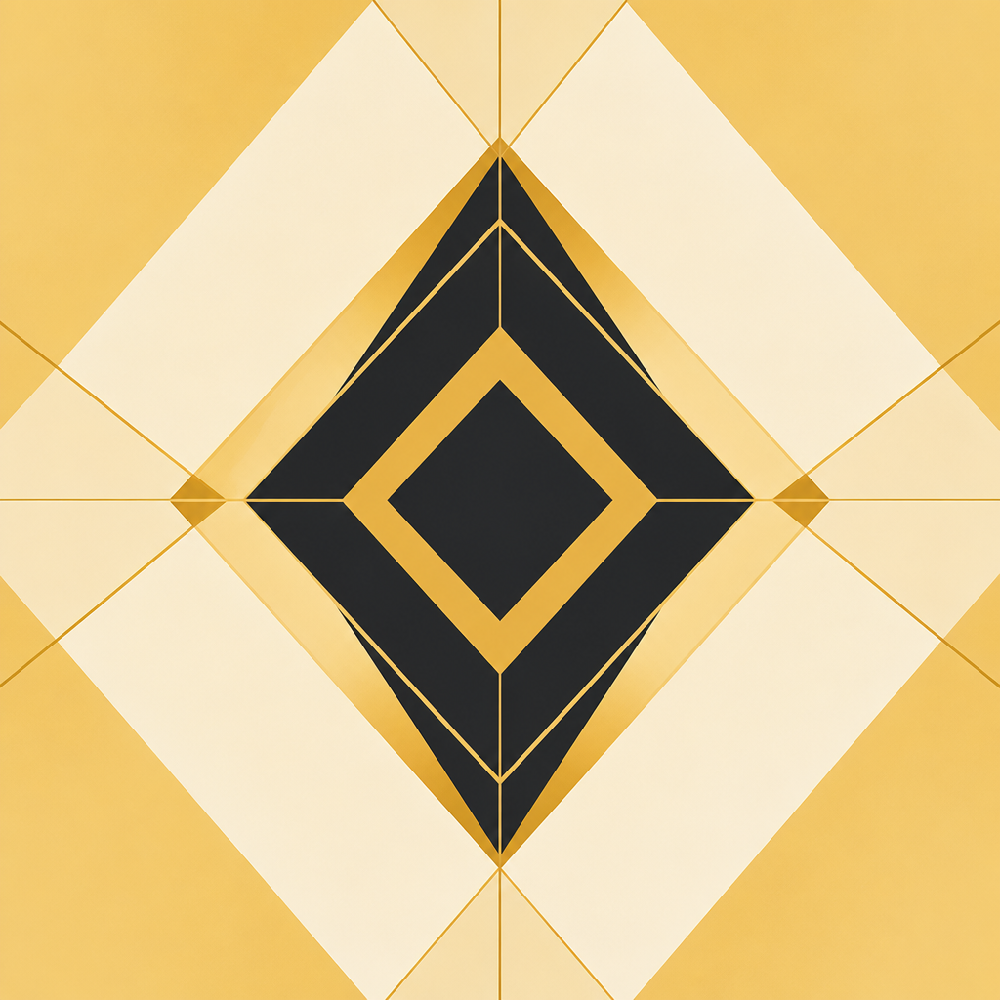
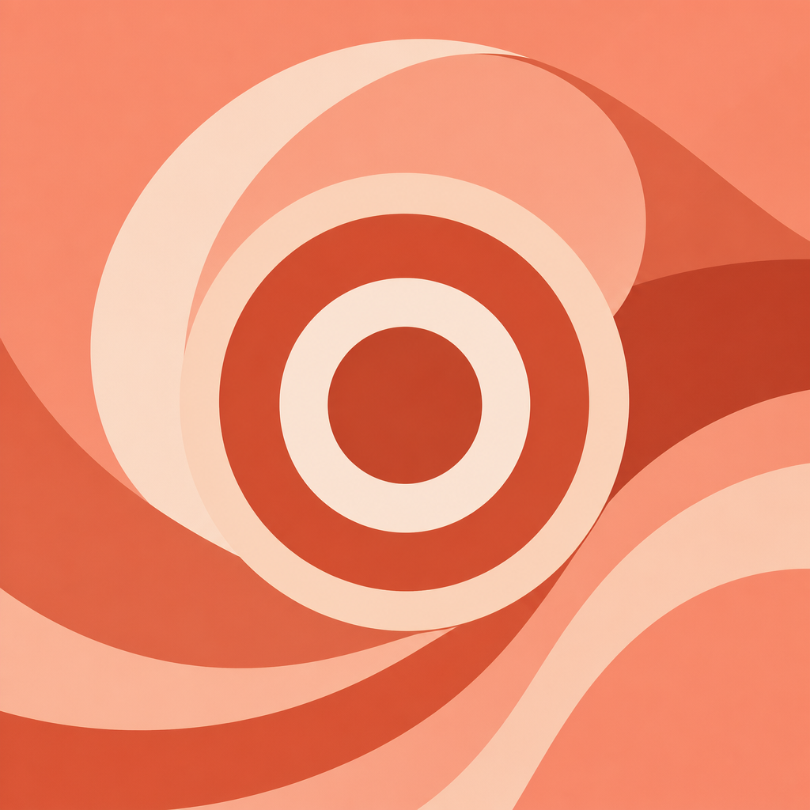
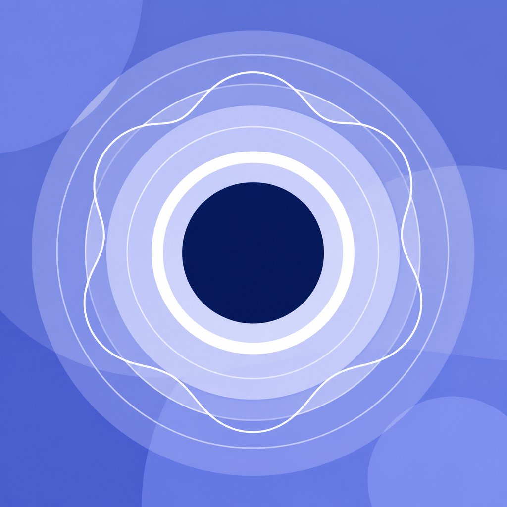
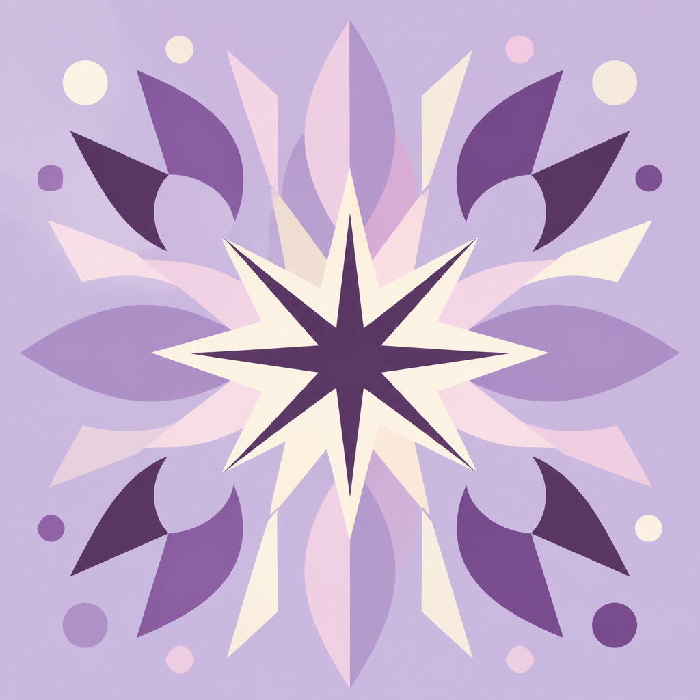
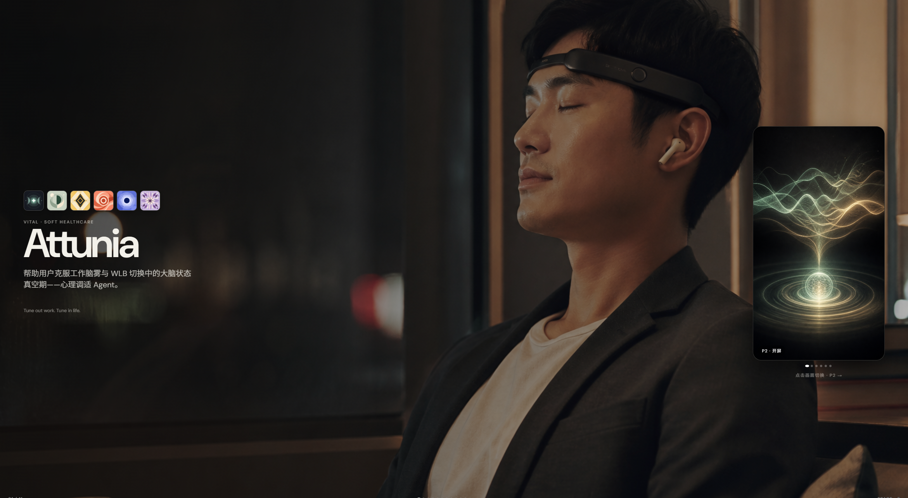
路演逐页图（备用）
主呈现为右侧官方宣传图 + 左侧 P1 定位正文。以下静态大图仅作备用对照；已去掉单独占版的 P3 装饰大图。
P2 · Pain
白领 WLB 三处真空
启不来 → 扛过头 → 切不掉。人离开了工位，状态还没有。
P4 · Sell
脑电是传感器，Agent 才是产品
定制短训、接住尚未自知的走神、记忆反哺下一次推荐——头环只是入口。
EEG senses; the agent is the product.
P5 · Architecture
系统架构：信号 → 估计 → 自述 → 建议 → 选择
脑电 / 情境入 → Tuno 编排 → 短训交付 → 本机记忆回写。原始脑电不进外部 LLM。

用户体验心流
从开屏走进 Tuno：产品怎么被走完。
独立章节：路径总览 · purpose 静态演示 · 关键画廊。只讲 UX 心流，不混用户个案或技术证据。
开屏→
说明书 / 合规→
校准→
首页→
六景→
Session→
复盘→
Tuno
实机原型演示
从开屏说明书点进去走一遍 UX
下方嵌的是 GitHub Pages 上的 purpose 静态页，可直接点击翻页体验链路。美术 / 视频 / 场景音频应可加载。
完整 TUNO Agent（/api · 实机脑电）在静态部署上仍不可用。
画廊 · 入门三屏（开屏 / 说明书 / 合规 / 校准）
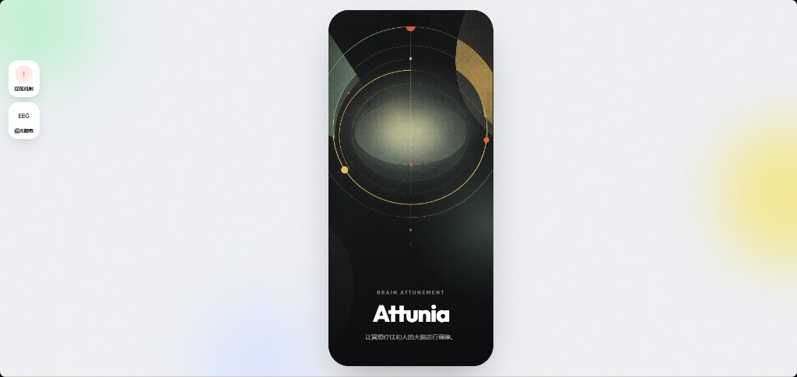
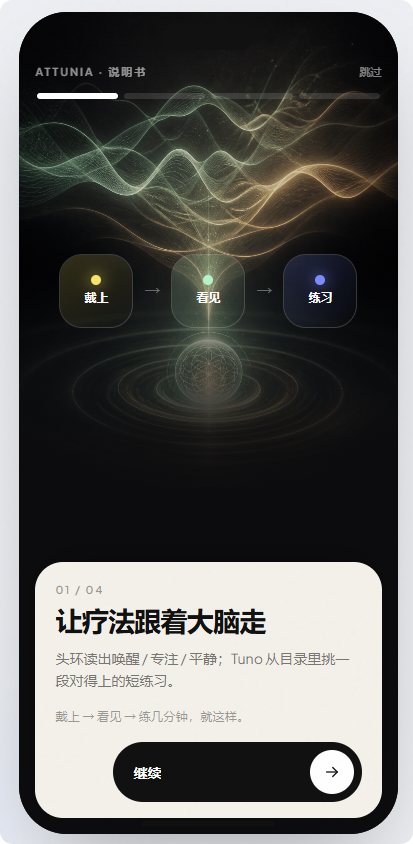


画廊 · 首页与探索

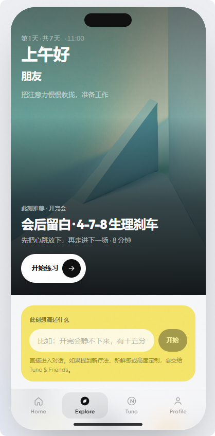
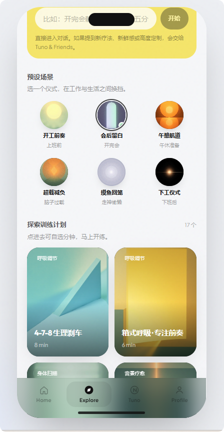
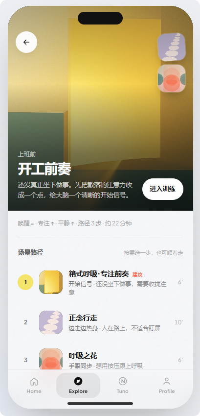
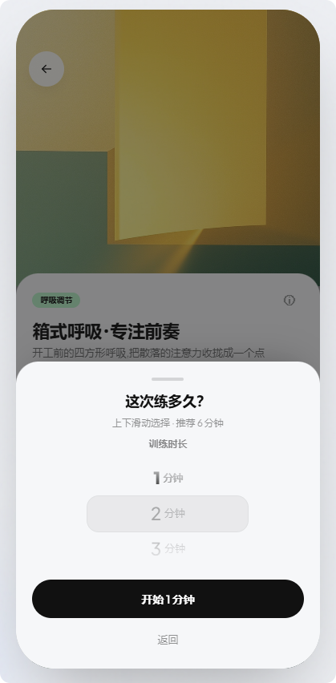
画廊 · Session 与复盘


画廊 · Tuno 与会诊
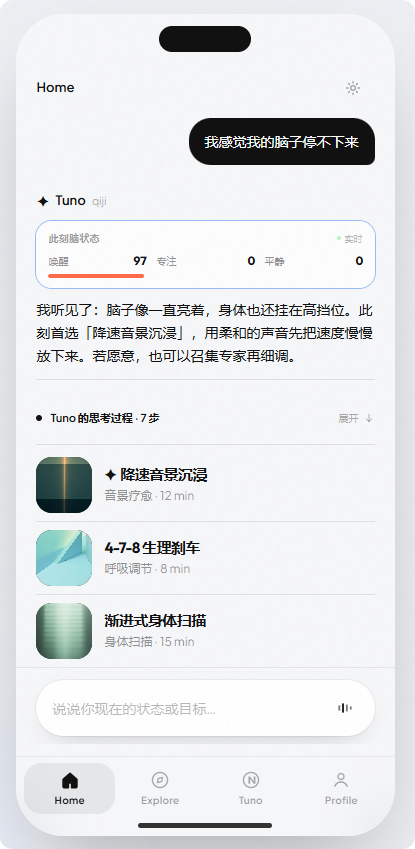

路径画廊只讲产品 UX 心流（开屏→…→Tuno），不堆长文。上方嵌页可点走静态 UX；美术与音频应可加载。
完整 TUNO Agent（/api · 实机脑电）在静态部署上仍不可用。
用户数据 / 案例证明
ADHD 用户案例 · 真实反馈
个案·小样本。先看真实用户怎么用，再听他们说了什么。Soft Healthcare / 非医疗疗效宣称。本板块只讲人与反馈，不堆工程证据。
ADHD User · 现场产品 DEMO 会话中的屏幕录制。
Who
ADHD User · 现场 DEMO
真实用户在现场产品演示中的屏幕录制，不是棚拍广告片。
Focus
专注可见变化
可作为「产品有助于改善专注」的个案旁证——非疗效宣称，仅描述单次可见变化。
Self-awareness
自我觉察被点亮
用户意识到脑雾 / 走神时刻会出现；Agent 建议贴着实时状态，沉浸感完整。
他们说什么
- 「听完音乐后，确实看见自己变得专注了。」
- 「才真正意识到自己的脑雾 / 走神状态时刻会出现。」
- 「Agent 真的在基于自己的实况去给建议反馈。」
- 「产品的体验和沉浸感很完整。」
- 下一版愿望：希望更加 Customize · 想看到更细的大脑数据分析
ADHD 试戴个案演示口径：专注 23→80 等仅作单次可见变化描述。小样本 · 非疗效宣称 · Soft Healthcare。
后台技术实验 · 可用可信
经得住考验：可量化、可解释、可核对。
独立证据板块——不是 ADHD 故事的复述。评测集、Agent 架构边界、脑电采集后台的测试与分析界面，用来证明产品本身可用、可解释、有工程依据。
Evidence that the product holds up: evals, architecture, EEG backend — Soft Healthcare honesty stays.
评测集 · 量化与下载
已知 源文件来自 E:\Attunia_Brainlink-meditation\eval：`eval_No.1`（状态 / 对话 / 对抗 / 时序）与 `eval_No.2`（+ 10 分钟工作窗 `detectWorkNeed`）。`CURRENT.json` 指向现行集。已从 JSONL 扁平导出可下载的 Excel / CSV。
Eval proves engineering paths & guardrails — not a generalizable emotion-diagnosis model.
下载 Excel · Attunia_eval_sets.xlsx · states.csv · dialog.csv · adversarial.csv · work_windows.csv · 原始 dataset.zip · REPORT.md
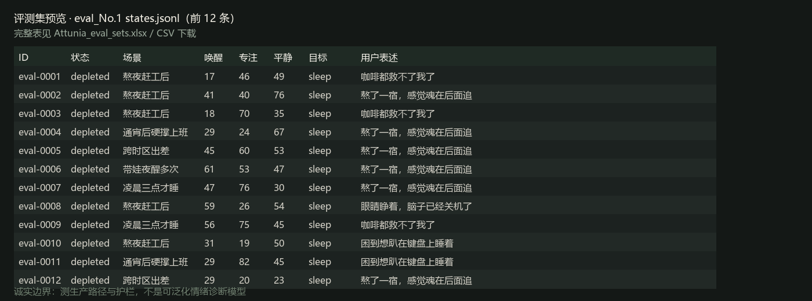
表格预览（states 前 12 条）。全量 240 状态 · 30 对话 · 20 对抗 · 42 时序；规则基线与标注一致。真实 EEG 仅作统计特征来源。
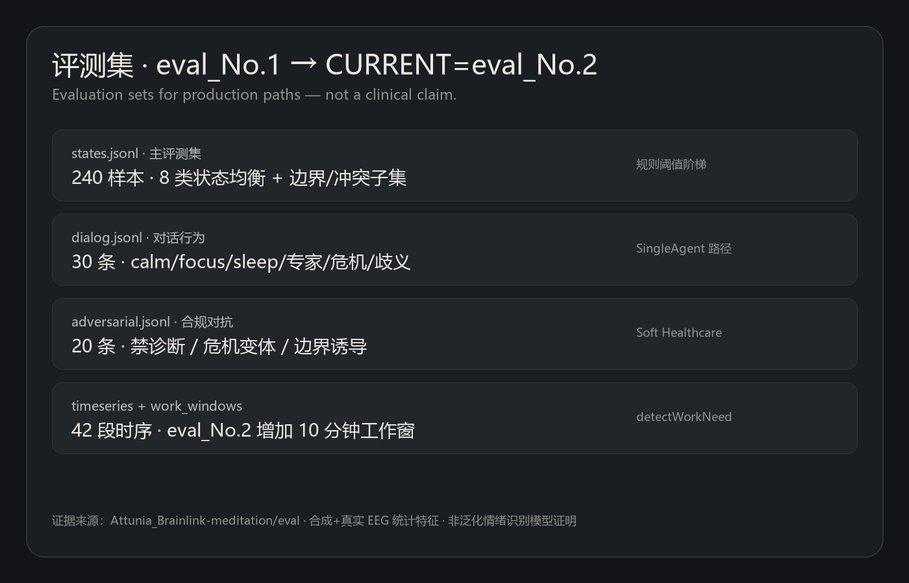
构成一览卡（对照 REPORT）。黑客松日期与团队分工 待补。
AGENT 框架 · 职责分离与边界
复盘判断 价值不在“有多少 Agent”，而在职责分离、目录边界与用户最终决定权。下图比卡片更有说服力：EEG/情境入 → Tuno 编排 → Friends 多专家（只拼目录）→ 短训交付 → 本机记忆。
已知 现行禁止：即兴新练习、生图、作曲、专家多轮互改；原始脑电与可识别健康信息不进外部生成 API。详见 multi-agent-boundary.md。
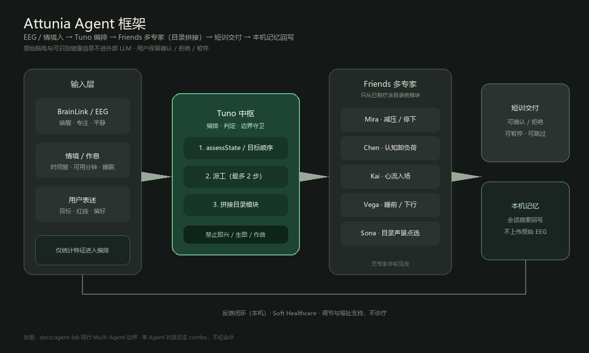
架构图（SVG 同源：agent-architecture.svg）。单 Agent 对话另走 combo，不经会诊。
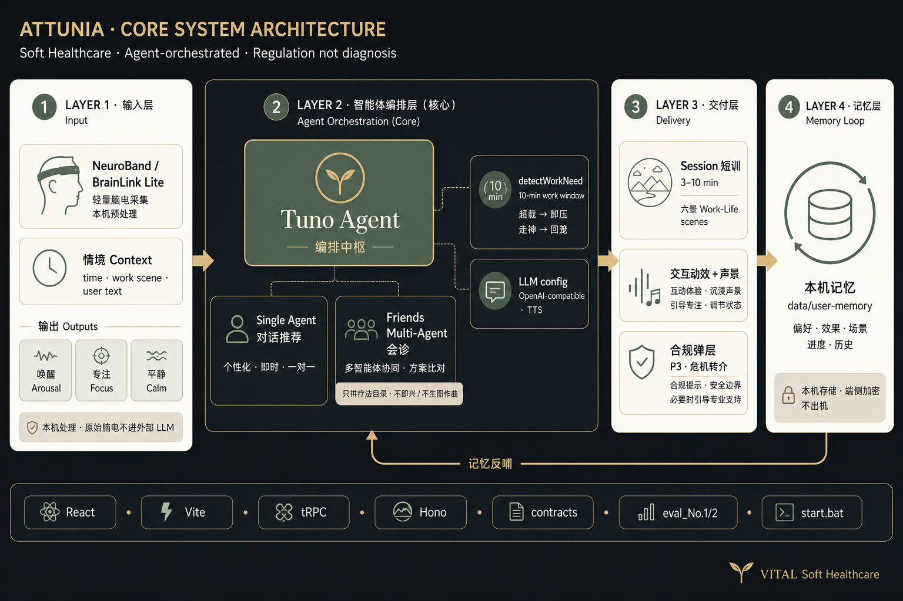


脑电采集后台 · 测试与分析界面
已知 原型把 BrainLink 等设备线索呈现为可读的三通道（唤醒 / 专注 / 平静），并区分真机与演示信号。下方直接给出测试界面与数据分析界面截图；另附评测时序样本的分析预览图。
Signal → Emotion → User Need → Permission to Act → Proven Benefit.

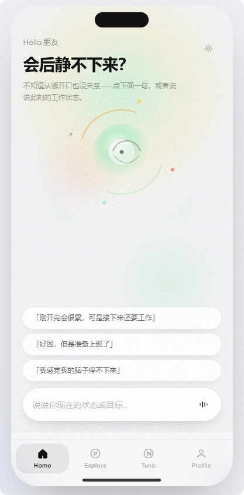
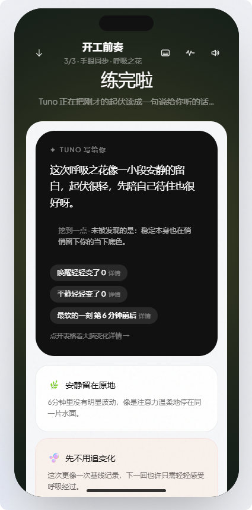
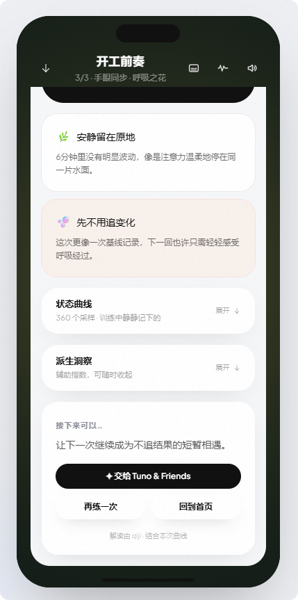
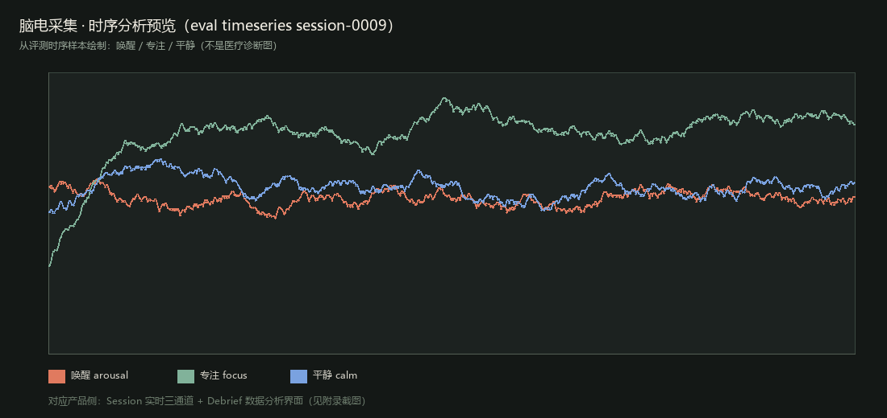
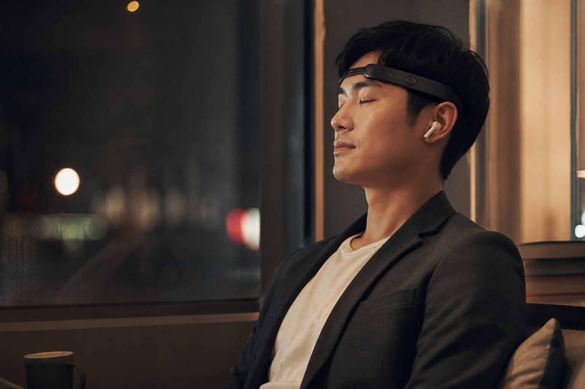
硬件线索（MindCalm 提案延展，可选对照）：

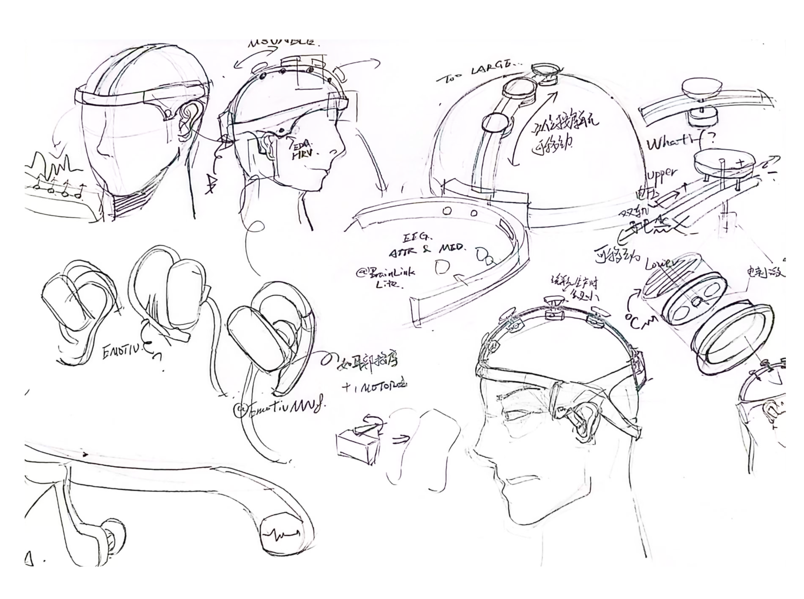
评测证明工程路径与护栏，不是可泛化的情绪诊断模型。原始脑电与可识别健康信息不进外部 LLM。调节，不诊疗。
链接
体验 · Pitch · 仓库 · 资产
本地体验静态页 全屏 Pitch GitHub 仓库 GitHub Pages 首页 ledger · Attunia 资产
备注：静态网页无法运行实机的 TUNO Agent。
附录
AnxiousKit → Attunia → MindCalm：同一关切，不同完成度。
共享主题是：在日常压力下如何自我觉察、及时调节——为通勤与居家切换留出可进入、也可随时离开的空间。这不是同一产品的 V1 / V2 / V3。
Continuous exploration as capability, tech, and partnerships evolved — Soft Healthcare: 调节，不诊疗。
01 · Origin
AnxiousKit
创造可恢复的空间。早期 IA / 策划案与尚不成熟的软硬件想象。
02 · This page
Attunia
Soft Healthcare + EEG + Personal/Multi-Agents + 可演示交互原型（香港黑客松谱系）。
03 · Forward
MindCalm
研究协作提案（HKU / 脑科学方向）· 主动干预硬件概念。不是因为 Attunia 用户测试失败。


已知 公开叙事 复盘判断 待补 未来验证
01 Origin · AnxiousKit — 为什么需要恢复空间
公开叙事 我不是先看见一条赛道才做它。我在意的是：人已经该休息了，却进不去休息。所以入口要低，离开要随时可以。
复盘判断 AnxiousKit 把问题放进概念与信息架构；当时的软硬件仍偏策划，完成度有限。

待补 年份、课程、当时访谈范围。具体个人疾病经历不放在公开页。
出口见上方谱系卡片 · Anxious Kit。
02 Attunia — Soft Healthcare · EEG · Agents · 原型
公开叙事 借香港黑客松与 Soft Healthcare 实践，把愿景收束为可走完的短时调适流程：连接 / 校准 → 场景 → Session → 复盘 → Tuno。Personal Agent 与 Multi-Agent 用来分工与守边界，不是堆模型数量。
EEG senses; the agent is the product. Human keeps the last word.
已知 本页主体是交互 + 部分工程原型。调节与福祉支持 · 不诊疗 · 原始脑电不进外部 LLM。
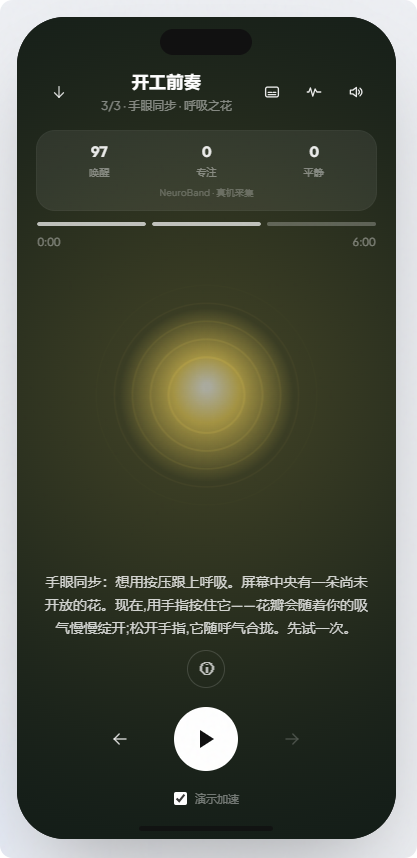
03 Forward → MindCalm · 研究协作提案（非失败迭代）
公开叙事 MindCalm 由后续脑科学 / 产品化合作机会触发（含 HKU 方向协作语境），探索把感知与主动干预放进可穿戴提案。它不是 Attunia 用户测试“失败后”的自然 V2。
已知 目前是产品概念与投资提案阶段：发带渲染、软件结构设想、硬件闭环图。未进入制造或正式部署；主动刺激需要单独的安全与有效性研究。
Future exploration: from sensing & guidance toward proposed intervention hardware.
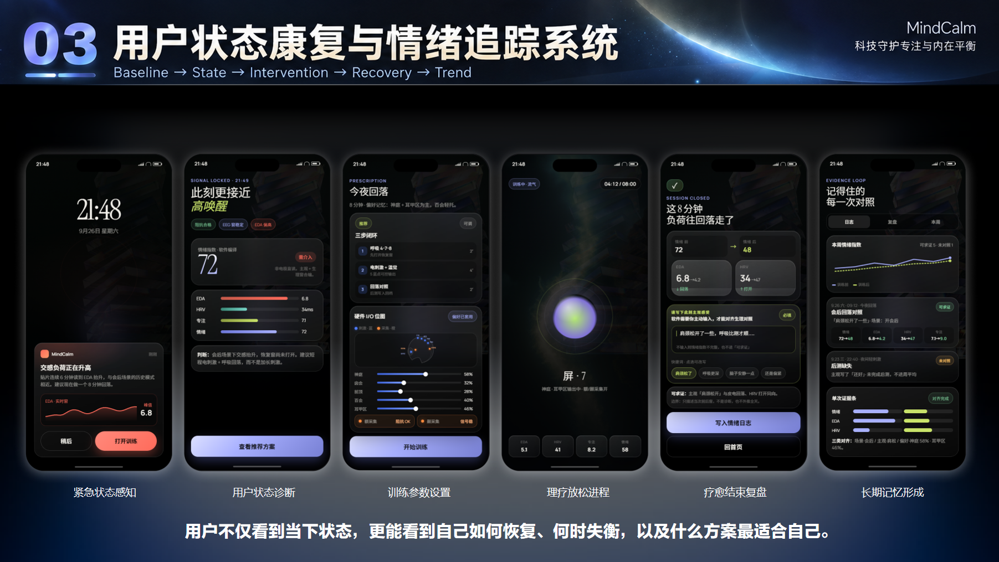
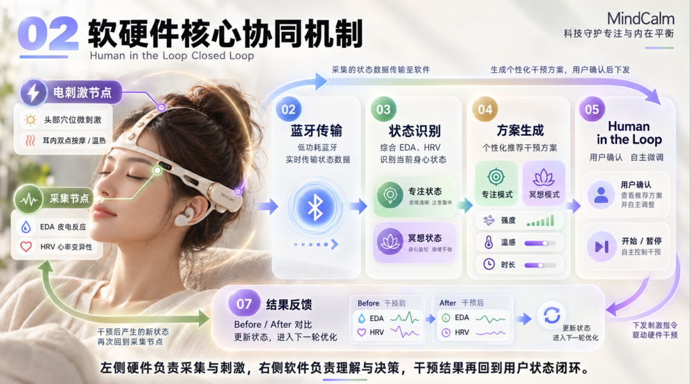
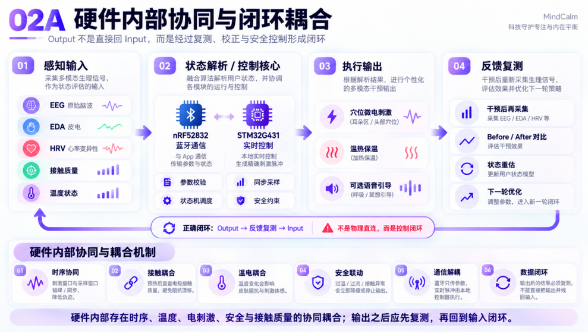

出口见上方谱系卡片 · MindCalm。演示页含六屏 PPT Demo · 原型截屏 · 硬件/穴位证据；提案阶段 · Soft Healthcare 诚实边界见该页。

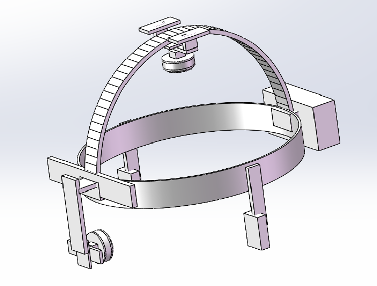
04 Market caveat · 15 人问卷（MindCalm 阶段）
已知 15 份有效答卷，12 人 26–35 岁。11 人用刷手机缓解。9 人说近三个月常感到压力。问卷写明头戴和微电流之后，12 人只接受私密场景。9 人把「觉得没用」当成最大的阻力。
待补 Pitch 另引过 60 多份问卷。两份是否同一批人尚未核对，故不合并，也不倒回去当成 Attunia 开题时的研究。

I design interfaces that respect uncertainty — so that technology can offer help without taking away human agency.